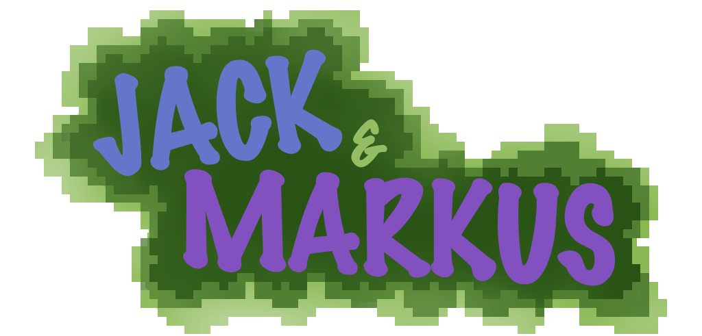
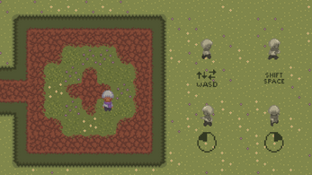

Die Jam
Teilnahme an der Wowie Jam 4.0 unter dem Thema 'Collaborate With AI'. Ziel war ein Spiel in nur 72 Stunden, bei dem die Zusammenarbeit mit einer künstlichen Intelligenz das zentrale Gameplay-Element bildet. Es war meine erste Game Jam, und sie verband kreative mit technischen Herausforderungen.
Unser Team
Ein Team aus zwei Programmierern, einem Musiker und einer Künstlerin entwickelte innerhalb von drei Tagen eine spielbare, atmosphärische Demo. Ich war einer der beiden Programmierer und habe den KI-Begleiter geschrieben.
Die Spielidee
In „Jack and Markus“ verirrt sich ein kleiner Junge in einem geheimnisvollen Wald. Ein Waldwesen begleitet ihn und hilft ihm, den Weg in die Freiheit zu finden. Je nach Spielerentscheidungen entwickelt es sich individuell weiter, als Nah- oder Fernkämpfer. Dieser Begleiter bildet den zentralen KI-Kern des Spiels.


Der KI-Begleiter
Das Spiel entstand in der Godot Engine, die Hauptlogik in GDScript, ergänzt durch C#-Komponenten für die KI. Den Begleiter habe ich als zustandsbasiertes System umgesetzt: Sein Verhalten und seine Entwicklung passen sich dynamisch an das Verhalten der Spielerin oder des Spielers an, zum Beispiel an Abstand, Bedrohungen und direkte Aktionen.
engine: godot
logic: gdscript
ai: c#
model: state-based
inputs: [distance, threats, player actions]
evolves: [melee, ranged]Herausforderungen
Die größte Herausforderung war die Teamkoordination unter hohem Zeitdruck. Das Leveldesign musste ohne lange Erklärung verständlich sein, und Level, Gameplay, UI und Atmosphäre mussten gleichzeitig funktionieren. Schnelle Entscheidungen und pragmatische Lösungen waren dabei entscheidend.
Fazit
Die Game Jam war intensiv und lehrreich. In drei Tagen ist eine spielbare Demo entstanden, und ich habe gelernt, das Verhalten eines KI-Begleiters schnell umzusetzen und mich im Team unter Zeitdruck abzustimmen. Die Erfahrung in agiler Entwicklung, Teamorganisation und schneller Entscheidungsfindung nehme ich in künftige Projekte mit.